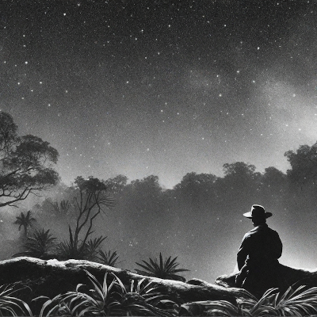

The Red One
The Red One is a multimedia adaptation of Jack London's iconic short story, blending narrative, visuals, and sound design into a unique cinematic experience. Set in a remote jungle, the story explores the discovery of a mysterious artifact that changes the lives of those who encounter it.

Socials